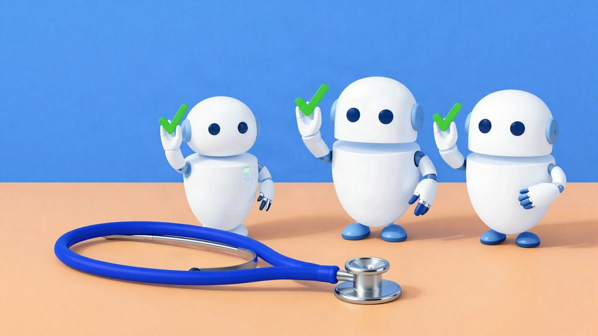

Kad se tri jaka AI modela slažu, u 31% slučajeva krivo ocjenjuju medicinske tvrdnje

Znanstvenici sa sveučilišta HSE u Sankt Peterburgu testirali su deset AI modela na 108 medicinskih tvrdnji, što je dalo oko 90.000 ocjena. Tri najjača modela složila su se u ocjeni 90 tvrdnji, a u 31% tih slučajeva verdikt je bio pogrešan. Modeli su gotovo u 60% slučajeva birali kategoriju "sporno", iako je takvih tvrdnji bilo samo 26%.
Znanstvenici iz Laboratorija za socijalnu i kognitivnu informatiku sveučilišta HSE u Sankt Peterburgu otkrili su da slaganje više AI modela nije jamstvo točnog odgovora na medicinska pitanja. Kad su se tri najjača modela složila oko ocjene tvrdnje, u 31% slučajeva njihov se verdikt nije poklopio s mišljenjem liječnika-eksperata. Rezultati su objavljeni u časopisu Scientific Reports.
Sve više ljudi provjerava zdravstvene informacije u chatbotovima. Prema podacima iz izvora, više od 64% Rusa barem je jednom tražilo medicinske informacije na taj način, a 28,1% to radi redovito. Popularan način provjere jest postavljanje istog pitanja nekolicini modela i usporedba odgovora. Istraživači su htjeli vidjeti pomaže li to doista.
Kako je izgledao eksperiment
Korpus je imao 108 tvrdnji iz pet tema koje su na ruskom internetu najzastupljenije u području zdravlja: cijepljenje, genetski modificirana hrana, zdrav način života i fitness, alternativna medicina te vitamini. Svaka tvrdnja bila je označena kao "točna", "netočna" ili "sporna", a oznake su određivane u nekoliko faza uz sudjelovanje medicinskih stručnjaka.
Deset jezičnih modela ocjenjivalo je tvrdnje na ruskom i engleskom. Istraživači su koristili četiri različite upute, mijenjali postavke nasumičnosti odgovora i svaki upit ponavljali tri puta, što je dalo oko 90.000 ocjena.
"Privid konsenzusa"
Znanstvenici taj efekt nazivaju "mirage of consensus", odnosno privid konsenzusa. Tri najjača modela složila su se u ocjeni 90 od 108 tvrdnji, no u 31% tih slučajeva verdikt je bio pogrešan. Glasanje tri sustava postiglo je točnost od 67,6%, što je usporedivo s jednim stabilnim modelom.
Modeli su pokazali i sklonost izbjegavanju jasnog odgovora. Gotovo u 60% slučajeva birali su kategoriju "sporno", iako je takvih tvrdnji u korpusu bilo samo 26%. Primjer je tvrdnja da odvar šipka povećava razinu šećera u krvi. Stručnjaci su je ocijenili netočnom, a modeli spornom, jer su u obrazloženjima pretpostavljali da se odvar pije sa šećerom ili medom, iako to u tvrdnji nigdje ne piše.
Kad su modeli umjesto "sporno" ipak donijeli jednoznačnu odluku, bili su u pravu u 87 do 96% slučajeva. Elena Artemenko, zamjenica voditelja laboratorija, kaže da problem nije toliko u nedostatku znanja koliko u mehanizmu oblikovanja konačne prosudbe. Smatra da bi modele trebalo naučiti razlikovati stvarnu neizvjesnost od situacija u kojima znanstveni podaci omogućuju konkretan zaključak.
Planovi istraživača
Autori planiraju provjeriti pojavljuje li se isti efekt na drugim tvrdnjama i jezicima te razvijati multiagentne sustave u kojima bi različiti modeli obavljali zasebne zadatke. Rezultate vide kao korisne za obične korisnike, developere i stručnjake koji se bave automatiziranim označavanjem podataka.
Izvor: CNews